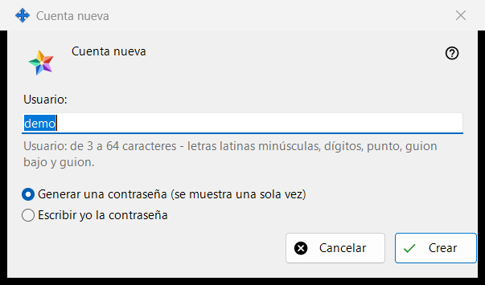
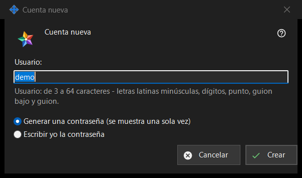

Cuenta nueva
Para qué sirve
Una ventana con dos modos. «Cuenta nueva» añade una cuenta al Media Exchange Server que administras; «Restablecer contraseña: <login>» da una contraseña nueva a una cuenta existente. Se abren desde «Añadir una cuenta..» y «Restablecer contraseña..» bajo la lista de cuentas de la página Media Exchange Server de los ajustes de Share Manager; para restablecer hay que tener una cuenta seleccionada.


En este orden
- En el modo de añadir, escribe el usuario.
- Elige cómo se crea la contraseña.
- En el modo de restablecer, decide si se desconectan todos los dispositivos de la cuenta.
- Pulsa «Crear» o «Restablecer».
- Copia la contraseña generada de la ventana siguiente, o escribe la tuya.
Los elementos
Declaración para la primera cuenta
En la primerísima cuenta, la ventana empieza con «Antes de crear la primera cuenta, lee lo que puede ver el operador del servidor:» y un cuadro de solo lectura con la declaración. Las cuentas posteriores y los restablecimientos no la muestran.
Usuario
Solo en el modo de añadir. De 3 a 64 caracteres: letras latinas minúsculas, dígitos, punto, guion bajo y guion; las mayúsculas se convierten en minúsculas. La indicación pasa al color de aviso mientras el texto no pueda ser un usuario, y «Crear» no continúa hasta que pueda serlo.
Cómo se crea la contraseña
«Generar una contraseña (se muestra una sola vez)» es la opción predeterminada: el programa crea una contraseña aleatoria que cumple las reglas y la ventana siguiente la muestra una sola vez. «Escribir yo la contraseña» abre la ventana «Contraseña de la cuenta», donde una línea en vivo indica lo que falta: al menos 10 caracteres con una letra latina mayúscula, una minúscula y un dígito.
Desconectar todos los dispositivos
Solo en el modo de restablecer. «Desconectar también ahora todos los dispositivos de esta cuenta» viene marcada de forma predeterminada. La línea de resultado informa entonces de que la contraseña ha cambiado y de que todos los dispositivos de la cuenta están desconectados; sin la marca, informa solo de que la contraseña ha cambiado.
Cuando el servidor acepta
La línea de resultado informa de que la cuenta está creada. Una contraseña generada aparece una sola vez en su propia ventana con «Copiar contraseña» y «Establecer mi propia contraseña..», que vuelve al restablecimiento con la opción «Escribir yo la contraseña». Con «Guardar las contraseñas de las cuentas en este PC» activada, la contraseña también se guarda en este PC y la cuenta obtiene «Mostrar contraseña..». Si esta compilación ofrece las funciones de cliente del intercambio y este PC no tiene cuenta propia, inicia sesión como primer dispositivo de la cuenta con esa contraseña.
Ajustes del gestor · Ajustes de uso compartido SFTP · Ajustes del servidor de intercambio